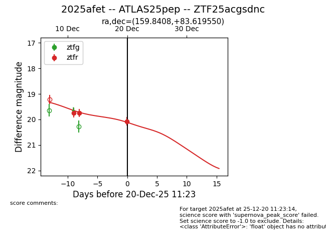
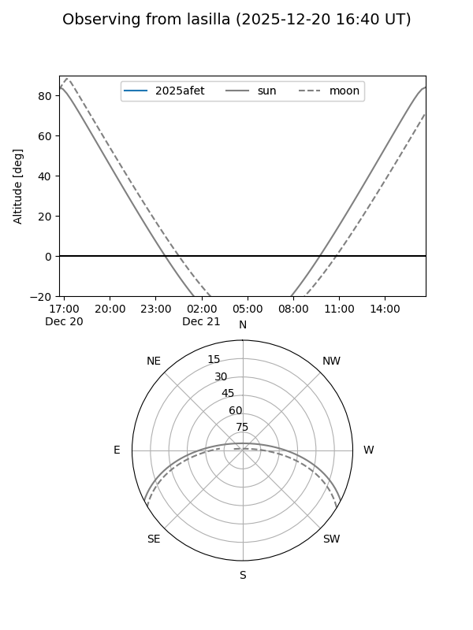
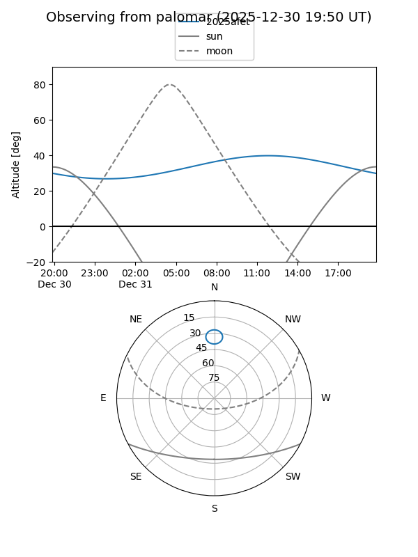
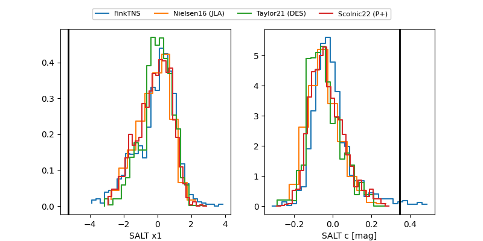

2025afet
Target 2025afet at 2025-12-31 16:59
Aliases and brokers:
FINK:
Lasair:
ALeRCE:
TNS:
YSE:
alt names
ZTF25acgsdnc (ztf,fink_ztf)
2025afet (tns,yse)
ATLAS25pep (atlas)
Coordinates:
equatorial (ra, dec) = 159.8408,+83.61955
equatorial (HMS+DMS) = 10:39:21.79,+83:37:10.38
galactic (l, b) = (127.0456,+32.41786)
Flags:
Photometry:
last ztfr=20.08
3 ztfr detections
Lightcurve

Visibility


Additional plots
